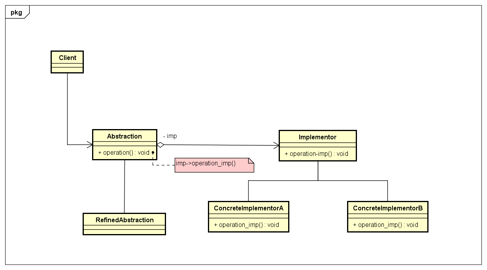

Bridge
Descrição:
Bridge é um padrão de projeto de software, utilizado quando é desejável que uma interface(abstração) possa variar independentemente das suas Implementações.
Diagrama de Classes genérico do padrão:

Exemplo:
O exemplo do livro consiste em criar uma interação entre um controle remoto e uma TV, onde, entre a classe TV, que é a classe de implementação, e a classe RemoteControl, que é a classe de abstração, existe uma espécie de "ponte", evidenciada pelo método set_channel() que usa a abstração do método tune_channel(). As classes que herdarem da TV, usarão da abstração dos métodos que foram implementadas dos "herdeiros" de RemoteControl.
Diagrama de Classes do exemplo: